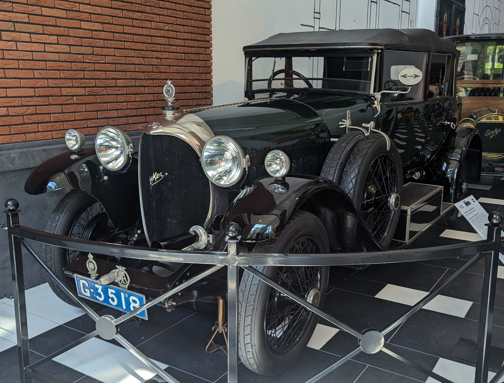
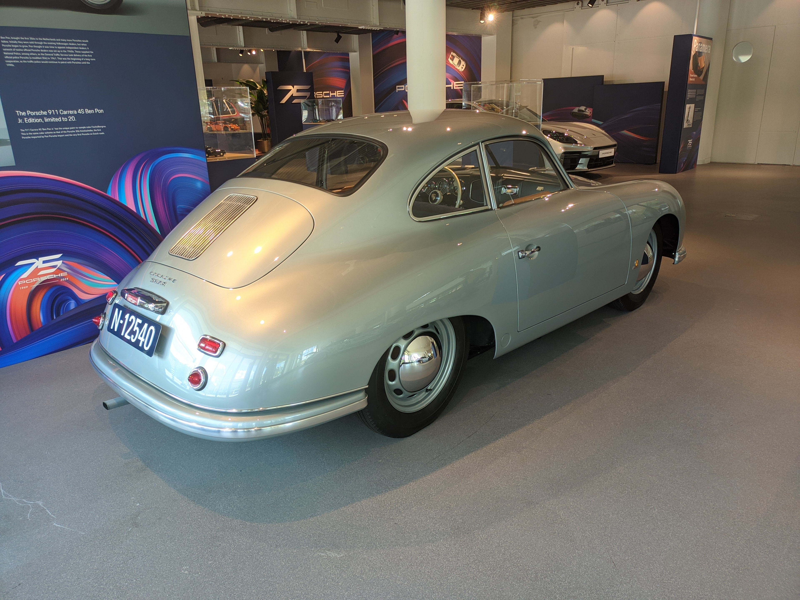
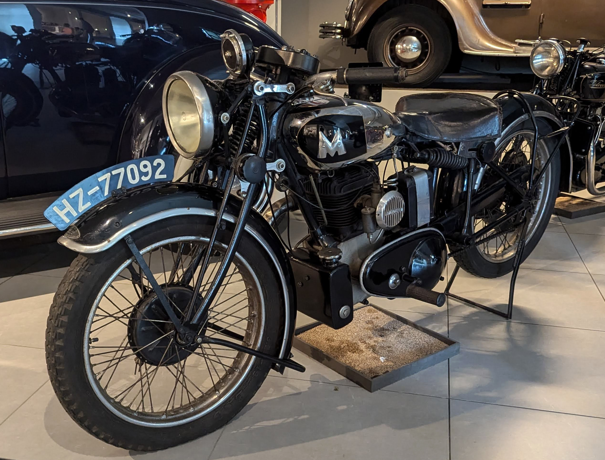

License Plates of
The Netherlands (NL)
Photographed in The Netherlands


Provincial Series from 1906 to 1956. N = Noord Brabant (North Brabant).



Provincial Series from 1906 to 1956. G = Noord Holland (North Holland).
Provincial Series from 1906 to 1956. H = Zuid Holland (South Holland).



Provincial Series from 1906 to 1956. N = Noord Brabant (North Brabant).
Provincial Series from 1906 to 1956. H = Zuid Holland (South Holland).


Provincial Series from 1906 to 1956. HZ = Zuid Holland (South Holland).